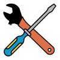

OpenEphys.Onix1
OpenEphys.Onix1 is a Bonsai library that can be used to control the ONIX PCIe Acquisition System. It provides:
- Support for a variety of tools such as Neuropixels (all variants), Miniscopes, Intan-based headstages, and more
- Automatic hardware synchronization of all data streams.
- Torque-free commutation of ultra-thin (down to ~0.2mm diameter) tethers
- High performance closed-loop performance (100 usec feedback loop times)
| User Guide | Operator Reference | Tutorials | Hardware Guide |
|---|---|---|---|
 |
 |
 | |
| Start here for usage instructions. | Detailed information on library components. | How to make the most of ONIX in Bonsai. | Go to the hardware documentation site. |
Why Bonsai?
ONIX is built on the ONI standard, which is software agnostic. Bonsai is the first software target pursued by the Open Ephys team for ONIX hardware. There are three major reasons for this:
Performance. ONIX is a universal interface for neural recording instruments. It can capture data produced by neural probes, cameras, high-speed ADCs, etc. In general terms, ONIX can capture data from arbitrary mixtures of asynchronous1 data sources. Bonsai provides an extremely powerful, open-source software platform for elegantly collecting, combining, and processing data from essentially any data source regardless of its sample rate, sample regularity, packet size, and bandwidth. Bonsai accomplishes this task in a fundamental manner: it explicitly models each data source as an ordered temporal sequence with a start and end called an Observable. This is analogous to how, for instance, Numpy explicitly models fixed-size multi-dimensional arrays as ndarrays. And, just like Numpy offers an extensive linear algebra toolkit to operate on these arrays, Bonsai offers an analogous toolkit for operating on temporal sequences of data. Because Bonsai was created around this core data model and operator library, it makes capturing, processing, and combining data sequences from different hardware sources natural in Bonsai, whereas it is bug prone and difficult in other software options.
Code quality. Open Ephys has been developing open source hardware and software for the Neuroscience community for over a decade. In terms of code quality, Bonsai is excellent. Bonsai uses a modern language and build system, has integrated package management, and an extremely clean, featureful, and well maintained API. Given that Bonsai's development model perfectly aligns with our values, we are very proud to be able to contribute to its growth in the Neuroscience community.
Third party integration. Bonsai provides support for hundreds of pieces of open- and closed-source hardware and software that are used extensively in neuroscience research. For instance:
- The classic Open Ephys acquisition system
- Ucla Miniscope ecosystem
- National Instruments acquisition boards
- Virtually every machine-vision and sCMOS camera2
- Sanworks Bpod
- Harp
- Deeplabcut & Sleap
- And much more
By targeting Bonsai, ONIX can be used seamlessly with these third party tools.
Note
We put a lot of effort into making these docs useful for everyone. If you have suggestions for making them even better, please contribute by either raising an issue or following the links saying Edit this page. We welcome all constructive feedback. As always, our goals are better performing tools, less redundant development, and more reproducible science.
In addition to this library, we are currently developing ONIX support for the Open Ephys GUI.
-
Although physical data sources are asynchronous (e.g. a Neuropixels probe runs on a distinct clock and produces data at a distinct rate compared to the camera sensor on a Miniscope), all data is hardware-timestamped on a common clock. No post-hoc data alignment is required.↩